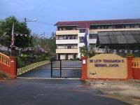

MY EDUCATION
My Primary School Experience
My primary school years were filled with valuable learning experiences and personal growth. From the age of 7 to 12, I began my education journey at Sekolah Kebangsaan (FELDA) Tenggaroh 05, where I spend the rest of my primary school years.
During my time at SK LKTP (FELDA) Tenggaroh 05, I was trusted with the role of an assisstant class, which taught me responsibility.
School Supervisor (2013-2016)When I turned 9, I was trusted with the role of a school supervisor, which taught me responsibility and leadership. I also held the position of vice-chief school supervisor in 2016.
Dance Representation (2013)I represented the school in dance events, which allowed me to showcase my creativity and passion for performance and my team won the third place.
Sports (2014-2016)In my later years of primary school, I represented the school and district in varities of sports which are high jump, javelin throw, shot put, long distance running and handball, fostering my interest in athletics and teamwork.
NILAM (2016)In 2016, I represented my school in NILAM and won the third place in Malay categories. It was tough but I managed to get it. Hence, I bring my school hope during that time.
UPSR Examination (2016)In my UPSR exams, I achieved 2A, 4B. This experience taught me the importance of hard work and resilience.